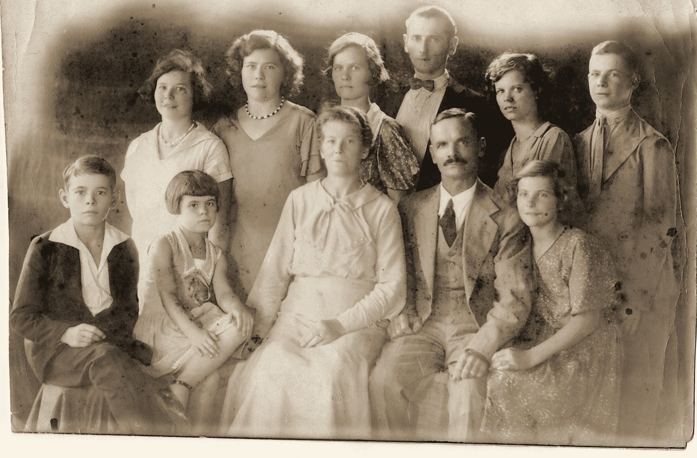
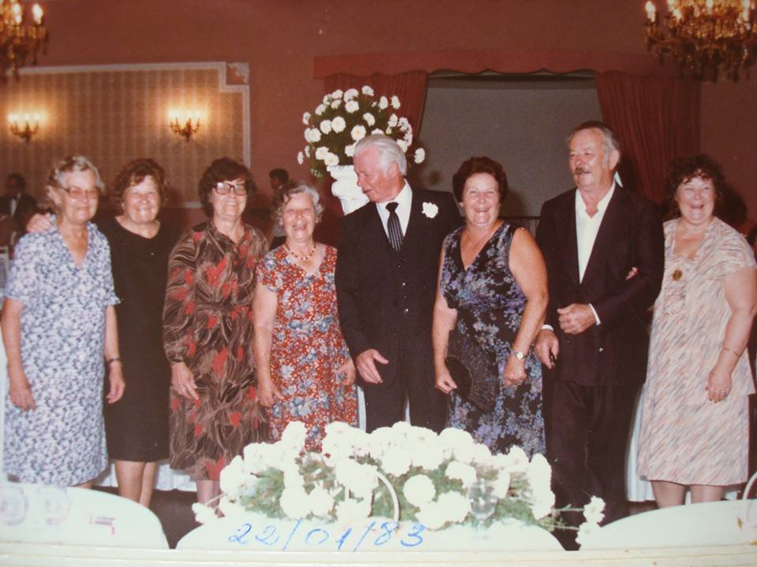

Teil IV · Bárbaras Horizonte
Kapitel 11 — In der Garage von Oma Rosita, in den Bildern von Opa Erno und im Vermächtnis von Dr. Carlos Heinz Funke
Feuchte Luft steigt im Taquari-Tal auf. Beständige Strömungen zwischen Joinville, Estrela und Arroio do Meio. Mikroklimate einer Familie.
Es gibt Häuser, in denen Weihnachten mit dem Duft von Plätzchen beginnt. In einem davon wartete die andere Hälfte dieser Geschichte auf mich.
26,3° S · 48,8° W, Joinville, SC
Vier Generationen in einer Garage
Auf dem Foto, das dieses Kapitel eröffnet, sind fünf Menschen zu sehen, und die Bildunterschrift der Familie nennt nur vier beim Namen. Das Bild ist das Foto eines Fotos. Jemand hat mit dem Handy eine Albumseite fotografiert und dabei, ohne es zu wollen, oben im Bild ein Stück der vorigen Seite mit aufgenommen: einen weißen Dachvorsprung, einen sehr blauen Himmel und zwei dunkle Vögel, die auf der Dachrinne sitzen. Darunter, geschützt von der Plastikfolie des Albums, ist die Szene, auf die es ankommt. Es ist eine Garage in Joinville, Anfang 2005. Hinten eine Holztür und ein dunkles Auto, und draußen das Grün eines Gartens.
Nach der Bildunterschrift, die die Familie dazu geschrieben hat, sind dort vier Generationen versammelt. Die Urgroßmutter Oma Rosita Lohmann Hoeveler, mit weißem Haar und geblümtem Kleid, auf einen Rollator aus Aluminium gestützt. Ihre Enkelin Bárbara, im bedruckten Kleid, mit dem runden Bauch einer Frau, die ihr zweites Kind erwartet. Dieses Kind bist du, Lucas, der am 10. März jenes Jahres zur Welt kommen sollte. Und die Großmutter, Dra. Ilusca Leocádia Hoeveler Funke, mit einem blonden Jungen im blauen T-Shirt auf dem Arm: Das bist du, Matheus, geboren am 20. Juni 2002. Durch einen Zufall, der mich immer wieder amüsiert, bist du am selben Tag geboren wie ich. Ich bekam ein Geburtstagsgeschenk mit siebenunddreißig Jahren Verspätung.

Ich mag dieses Bild wegen dessen, was es zeigt, und wegen dessen, was es verbirgt. Es zeigt eine Linie von Frauen: Rosita, 1918 im Vale do Taquari in Rio Grande do Sul geboren; Ilusca, die zwischen Estrela und Nova Petrópolis aufwuchs; Bárbara, am 27. Juli 1972 in Porto Alegre geboren und in Joinville aufgewachsen. Es verbirgt fast alles, was vor ihnen kam: die Segelschiffe von 1846, einen Hof von vierundzwanzig Kolonien, eine Frau, die sechsundzwanzig Tage nach einer Geburt starb, ein neues Haus in Palmas, gegenüber dem Salto do Taquari. Nichts davon ist auf dem Foto zu sehen, aber all das war darin, stand an einem Sommertag in einer Garage. Die fünfte Person, eine junge Frau im blauen Kleid, nennt die Bildunterschrift nicht, und ich lasse es dabei.
In den vorigen Kapiteln bin ich den Strömen gefolgt, die in mir zusammenfließen: den Haas und den Meier aus Bayern, den Doerner, den Preiss, den Michels und den Arns. Jetzt muss ich tun, was ein Meteorologe tut, wenn er merkt, dass seine Rückwärtstrajektorie nur die Hälfte der Feuchtigkeit eines Gewitters erklärt hat: die andere Quelle suchen. Matheus und Lucas sind nicht nur Haas. Sie sind auch Funke, Hoeveler, Lohmann, Endres, Schnack und Wingert. Diese Hälfte kann ich nicht allein erzählen.
Deshalb spricht in diesem Teil IV auch Bárbara. Die kursiven Abschnitte, die immer mit ihrem Namen eingeleitet werden, sind von ihr, in der ersten Person. Der Rest bleibt meine Stimme, die Stimme dessen, der von außen in diese Familie kam, als Schwiegersohn, und die Namen nach und nach lernte.
Die andere Hälfte
Joinville hat ein Klima, das ich als Meteorologe immer theatralisch fand. Die Stadt liegt eingezwängt zwischen der Baía da Babitonga im Osten und der Mauer der Serra do Mar im Westen, die dort Serra Dona Francisca heißt. Die feuchte Luft vom Ozean wird gegen den Hang gedrückt, steigt auf, kühlt ab und gibt ihre Feuchtigkeit als Regen ab. Deshalb regnet es so viel in Joinville. Es ist eine der regenreichsten Städte Südbrasiliens, mit ganzen Tagen voller Nieselregen und Sommernachmittagen, an denen der Regen ohne jede Vorwarnung schwer herunterkommt. Die Kolonisten, die 1851 ankamen, um die Colônia Dona Francisca zu gründen, lernten das schnell. Ihre Nachkommen haben bis heute die Gewohnheit, einen Regenschirm neben der Tür stehen zu haben.
In dieser Stadt zwischen Meer und Gebirge ließen sich die Funke nieder, und hierher kamen später die Hoeveler aus Rio Grande do Sul. Bárbaras Vater, der Arzt Carlos Heinz Funke, wurde dort am 10. August 1939 geboren. Die Mutter, Ilusca, kam aus Rio Grande. Ich weiß nicht, und ich werde es nicht erfinden, wo und wie die beiden sich kennenlernten. Er studierte Medizin in Rio Grande do Sul, und das Universitätsleben in Porto Alegre oder in der Umgebung ist der wahrscheinlichste Schauplatz, aber das ist nur eine Hypothese. Ich weiß, dass sie heirateten, dass sie vier Kinder hatten (Bárbara, Katherine, Alessandra und Paulo Jacques) und dass Oma Rosita ihre letzten Jahre in ihrer Nähe verbrachte, in Joinville.
Die Funke bringen eine Überraschung mit, die ich erst sah, als ich die beiden Stammbäume zusammenlegte. In den Einträgen bei FamilySearch sind Paulo Funke und Hulda, Bárbaras Urgroßeltern, 1881 und 1889 in Glauchau in Sachsen geboren, und ihr Sohn Oscar Martin, Bárbaras Großvater, kam am 1. Dezember 1910 im Bezirk Glauchau zur Welt. Glauchau liegt wenige Dutzend Kilometer von Chemnitz entfernt. Und Chemnitz ist die Stadt, in der nach der Erinnerung meiner Familie der Fata und die Mota lebten, bevor sie 1913 aufbrachen. Um 1910 ist es also möglich, dass die Urgroßeltern auf meiner Seite und die von Bárbara in derselben Gegend Sachsens lebten, ohne voneinander zu wissen, und dass sie alle am Ende in Santa Catarina landeten. Kein Papier sagt, dass sie sich begegnet sind. Und es gibt noch einen Zweig weit weg von dort: Dora Marta, die Oma Dora, war die Tochter von Jacques Aenishaenslin, der in der Schweiz geboren war, in einer Familie aus Ormalingen bei Basel.
Als ich Bárbara heiratete, fügte ich meinem Stammbaum einen Zweig hinzu, den ich nicht kannte. Auf meiner Seite Katholiken aus Bayern, von der Mosel und aus dem Rheinland. Auf ihrer Seite Lutheraner aus Braunschweig, aus Schleswig-Holstein, aus der evangelischen Tradition des Vale do Taquari und der Serra Gaúcha. Auf meiner Seite Leute, die mit ihren Händen Kirchen bauten. Auf ihrer Seite Leute, die lehrten und heilten. Ich will daraus keine Formel machen, denn Familien sind gemischter als jede Zusammenfassung, aber der Gegensatz ist da, und ich habe ihn seit den ersten Sonntagsessen in Joinville gespürt.
Hier gebe ich Bárbara das Wort.
In meiner Erinnerung gehört Oma Rosita so sehr zum Haus in Joinville wie die Küche. Sie kam aus Rio Grande, aus einer Familie mit zwölf Geschwistern, und ich habe lange gebraucht, um zu verstehen, was das bedeutete. Wenn sie von ihren Geschwistern sprach, klangen die Namen wie die von Romanfiguren: Urbano, Armando, Sunta, Arlindo. Lange waren sie für mich mehr Namen als Gesichter: Leute, die weit weg lebten, in einem Tal, das sie vor langer Zeit verlassen hatte.
Der Name, der mich am unmittelbarsten mit ihr verbindet, ist nicht einmal meiner, sondern der meiner Mutter. Ilusca Leocádia. Das Leocádia kam von der Urgroßmutter, Miguelina Leocádia Endres, der Mutter von Oma Rosita. In unserer Familie werden die Namen so weitergegeben, nach innen, im zweiten Vornamen, wie etwas, das man nicht ankündigt, das aber auch nicht verloren geht.
Der Arzt von Pirabeiraba
Dr. Carlos Heinz Funke, der in den Dokumenten mal als Heinz, mal als Heins erscheint, starb 1989 in Joinville, mit etwa fünfzig Jahren. Bárbara war damals ein Teenager. Ich habe ihn nicht gekannt. Ich weiß von ihm, was die Familie erzählt und was die Stadt bewahrt hat, und die Stadt hat einiges bewahrt.
In Pirabeiraba, dem ländlichen Distrikt nördlich von Joinville am Fuß des Gebirges, tragen zwei öffentliche Einrichtungen seinen Namen. Die eine ist die Gesundheitsstation Unidade Básica de Saúde da Família Dr. Carlos Heinz Funke. Die andere ist die städtische Landwirtschaftsschule Escola Agrícola Municipal Carlos Heins Funke, gegründet 1989, im Jahr seines Todes, und am 15. Februar 1990 zum Betrieb zugelassen.
Archivkarte: Escola Agrícola Municipal Carlos Heins Funke, Pirabeiraba, Joinville (SC). Gegründet 1989 durch das Dekret Nr. 6168/89 und das Gutachten 452/89; Betrieb zugelassen am 15.02.1990; der Eltern- und Lehrerverein (APP) wurde durch das Gesetz Nr. 3.968 vom 05.07.1999 als gemeinnützig anerkannt. Die Schule bietet die Sekundarstufe I (ensino fundamental, 6. bis 9. Schuljahr) mit landwirtschaftlicher Vorqualifizierung an, als Ganztagsschule, für Schüler aus der ganzen Gemeinde. Quelle: institutionelle Seite des Eltern- und Lehrervereins der Schule (abgerufen 2026).
Ich stelle mir gern vor, was dieser Name an einer Landwirtschaftsschule einem Mann gesagt hätte, der sein Leben zwischen Sprechzimmern und Krankenhäusern verbracht hat. Die Seite der Schule erklärt, das Ziel sei, die Jugendlichen auf die Arbeit im landwirtschaftlichen Betrieb der Familie vorzubereiten, „indem man das Interesse am Verbleiben auf dem Land weckt“. Das ist fast eine Antwort, hundert Jahre später, auf das Drama aller Familien dieses Buches, die zu viele Kinder für das vorhandene Land hatten und sie fortgehen sahen. Ich weiß nicht, ob Dr. Carlos Heinz jemals daran gedacht hat. Ich weiß, dass die Namen, die eine Stadt ihren Schulen und Gesundheitsstationen gibt, eine Art sind zu sagen, wer sich um sie gekümmert hat.
Von seiner Familie habe ich zwei Fotos, und beide verlangen eine vorsichtige Lesung.
Das erste ist ein Atelierporträt in Sepia, vom Alter fleckig, das die Familie als „der Urgroßvater und die Familie von Oma Dora“ aufbewahrt. Oma Dora ist die Mutter von Dr. Carlos Heinz, Bárbaras Großmutter väterlicherseits. In der Mitte sitzen ein Mann mit Schnurrbart, hellem Anzug und Weste und eine Frau in einem weißen Kleid mit breitem Kragen, die Hände im Schoß. Um sie herum neun junge Leute: junge Männer mit Krawatte, junge Frauen mit kurzem Haar nach der Mode der späten 1920er-Jahre, ein Mädchen mit geradem Pony, ein Junge mit offenem Kragen. Wenn ich richtig gezählt habe, sind es neun Kinder. Die Zuordnung der einzelnen Gesichter, auch die von Dora, muss noch mit jemandem bestätigt werden, der sie kennt, und ich wage sie nicht.

Das zweite wurde gut fünfzig Jahre später aufgenommen, in einem Festsaal mit Kristallleuchtern und roten Vorhängen. Auf die Tischdecke eines mit weißen Margeriten geschmückten Tisches hat jemand mit Kugelschreiber das Datum geschrieben: 22/01/83. Acht Personen stehen nebeneinander und lachen: sechs Frauen in bedruckten Kleidern und zwei Männer im Anzug, einer davon mit einer weißen Nelke im Knopfloch. Die Familie führt das Bild als „Oma Dora mit ihren sieben Geschwistern“. Acht ist also die richtige Summe, Dora und sieben weitere. Wenn auf dem alten Porträt neun Kinder waren, dann ist eines der Geschwister 1983 nicht zum Fest gekommen, oder meine Zählung auf dem alten Bild ist falsch. Ich überlasse die Frage lieber Bárbara und ihren Schwestern, als eine Antwort zu erzwingen.

Wenn ich die beiden Bilder nebeneinander betrachte, sehe ich etwas, das die Genealogie selten zeigen kann: die Zeit, die an denselben Menschen arbeitet. Die ernsten jungen Leute im Atelier, die mit der Feierlichkeit von Menschen in die Kamera blicken, die nicht wissen, ob es je ein zweites Foto geben wird, werden zu den lachenden Alten im Festsaal, die keine Angst mehr vor der Kamera haben und sich umarmen, um ins Bild zu passen. Zwischen dem einen Bild und dem anderen liegen ein Weltkrieg, die Nationalisierungskampagne, die das Deutsche in den Schulen und auf den Straßen verbot, und die Verwandlung Joinvilles von einer Kolonistenstadt in eine Industriestadt. Dazwischen liegt auch das ganze Leben von Dr. Carlos Heinz, der im Januar 1983 dreiundvierzig Jahre alt war und noch sechs vor sich hatte.
Pirabeiraba, wo die Schule und die Gesundheitsstation mit seinem Namen stehen, ist ein guter Ort, um Joinville zu verstehen. Der Distrikt liegt im Norden der Stadt, wo die Ebene auf das Gebirge trifft. Dort führt die alte Estrada Dona Francisca vorbei, im 19. Jahrhundert angelegt, um die Kolonie an der Küste mit der Hochebene von São Bento zu verbinden, eines der Werke, auf die die Kolonisten am stolzesten waren. Es ist ein Land der kleinen Höfe, der Bananen- und Reisfelder, der Kolonistenhäuser mit gepflegten Gärten und auch der Flüsse, die eilig aus dem Gebirge herabkommen und nach einem starken Regen leicht über die Ufer treten. Ein Arzt, der dort arbeitete, behandelte Bauern, Arbeiter, die jeden Tag zu den Fabriken der Stadt hinunterfuhren, Kinder mit Würmern, Alte mit Bluthochdruck. Ich habe keine Liste der Orte, an denen Dr. Carlos Heinz praktizierte, und ich werde keine erfinden. Aber dass sein Name für zwei Einrichtungen in diesem Distrikt gewählt wurde, sagt recht deutlich, dass die Stadt ihn dort anerkannt hat.
Über ihren Vater schreibt Bárbara wenig, und ich respektiere dieses Maß.
Es ist seltsam, den Namen des eigenen Vaters auf einem Schild zu sehen. Man wächst auf und nennt einen Menschen Papa, der für die anderen der Doktor war. Nachdem er gestorben war (ich war damals ein Teenager), ging sein Name an eine Schule und an eine Gesundheitsstation und gehörte nicht mehr nur uns. Heute denke ich, dass auch das eine Art Erbe ist: zu wissen, dass die Arbeit eines Menschen weiter genützt hat, nachdem er gegangen war, an Orten, an denen keiner von uns war.
Dr. Carlos Heinz wäre übrigens um ein Haar im Deutschland Hitlers geboren worden. Die Geschichte wird in Bárbaras Familie erzählt, und ich halte sie so fest, wie sie mich erreicht hat.
Der Weinkeller von 1939
Sachsen und Joinville, 1939
Im Jahr 1939 reisten Oscar Martin Funke und seine Frau, die Oma Dora, nach Deutschland. Oscar war 1910 in Glauchau in Sachsen geboren und als Junge nach Joinville gekommen; er war immer noch Deutscher. Dora war Brasilianerin, 1914 in Joinville geboren, und Bárbaras Familie bewahrt über sie einen Satz, den ich nicht verbessern will: Sie hatte die schönsten Beine von Blumenau. In jenem Jahr war sie mit ihrem ersten Kind schwanger.
Im Haus der Verwandten lud jemand Oscar ein, mit ihm in den Keller zu gehen und einen Wein auszusuchen. Der Wein war der Vorwand. Unten, wo niemand mithörte, sagte der Verwandte, was man in der Stube nicht laut sagen durfte: Hitler sei schrecklich, der Krieg komme, und sie müssten versuchen, sofort nach Brasilien zurückzukehren. Ein Mann von neunundzwanzig Jahren, Deutscher, im wehrpflichtigen Alter, wäre eingezogen worden, wenn er geblieben wäre.
Die Rückkehr war nicht einfach. Damit Oscar Deutschland verlassen konnte, brauchte es die Hilfe des brasilianischen Konsuls, der ihm eine Genehmigung ausstellte. Und im Hafen wurde um die Plätze auf dem Schiff gestritten, in einer Zeit, in der viele weg wollten. Nach der Überlieferung der Familie war es der Charme der Oma Dora, der die Sache entschied. Schwanger, schön und Brasilianerin, bekam sie die Plätze.
Carlos Heinz Funke kam am 10. August 1939 in Joinville zur Welt. Drei Wochen später, am 1. September, überfiel Deutschland Polen, und der Zweite Weltkrieg begann. Wäre der Verwandte nicht in den Weinkeller gegangen, hätte der Konsul nein gesagt, hätte die Oma Dora am Kai niemanden überzeugt, dann wäre der Schwiegervater, den ich nie kennengelernt habe, im Sachsen des Krieges geboren worden, als Sohn eines Soldaten.
Ich kann diese Geschichte nicht lesen, ohne an die andere Seite der Familie zu denken. 1913 verließen der Fata und die Mota Deutschland ein Jahr vor dem Ersten Weltkrieg, durch die Tür von Marseille, als die Auswanderung nach den Worten meines Vaters schon versperrt war. 1939 verließen die Funke Deutschland wenige Wochen vor dem Zweiten, mit der Hilfe eines Konsuls. Und beide Familien bewahrten dasselbe Bild eines Kellers, in dem man die Wahrheit sagen konnte: den Keller in Ituporanga, in dem der Fata während des Krieges Radio hörte (Kapitel 7), und den Weinkeller in Sachsen, in dem ein Verwandter sagte, es sei Zeit zu gehen.
Der Lehrer von Nova Petrópolis
Von der Seite von Bárbaras Mutter ist das älteste Foto, das ich habe, das einer Schule. Auch dieses ist eine Reproduktion: ein kleines Schwarzweißfoto, auf einen rosafarbenen Stoff gelegt und von oben fotografiert. Darauf stehen etwa vierzig Schüler in Reihen vor einem Gebäude, die vorderen in der Hocke, die hinteren stehend, fast alle in weißem Hemd oder weißer Bluse, die Mädchen mit dunklem Rock. In der Mitte, im dunklen Anzug, ein erwachsener Mann. Dahinter etwas, das wie eine Fahne aussieht. Es ist Opa Erno Hoeveler, euer Urgroßvater, Lehrer.

Erno Hoeveler war Lehrer an Schulen der evangelischen Gemeinde in Estrela und in Nova Petrópolis, in Rio Grande do Sul. Er heiratete Rosita Érica Lohmann, die Tochter von Francisco Jacob Lohmann und Miguelina Endres, und hatte mit ihr vier Kinder, darunter Ilusca und Walter. In den deutschen Kolonien des Südens war der Lehrer der Gemeindeschule eine zentrale Gestalt, oft neben dem Pastor der einzige gebildete Mann am Ort. Er brachte das Lesen auf Deutsch und auf Portugiesisch bei, lehrte Rechnen und Katechismus und leitete häufig den Chor und half beim Gottesdienst. Reich wurde man mit diesem Beruf nicht. Ilusca selbst sagte das ganz schlicht in einer Zeitungsreportage über die Weihnachten von früher in Joinville: Der Vater war Lehrer und verdiente wenig, und deshalb wurden viele Weihnachtsgeschenke repariert und wiederverwendet, und manchmal bestand das Geschenk aus Äpfeln und Keksen.
In derselben Reportage erzählt sie von zwei Geschenken, die ihre Kindheit geprägt haben. Eine Puppe, die sie bis heute aufbewahrt, mit Augen, die die Zeit schon eingesunken hat, und eine gebrauchte Geige, die der Vater in einem Pfandhaus in Porto Alegre gekauft hatte. Ich lese diesen Satz und sehe Opa Erno, den ich auch nicht gekannt habe, mit dem knappen Gehalt eines Kolonielehrers ein Pfandhaus in der Hauptstadt betreten, zwischen Dingen wählen, die andere Familien aus Not zurückgelassen hatten, und mit einer Geige für die Tochter wieder herauskommen. Ich kenne weder das Jahr noch den Laden, und ich muss sie nicht kennen. Als Ilusca heiratete, so erzählte sie, schenkte sie die Geige einem Neffen.
Ilusca, die Tochter des Lehrers, der wenig verdiente, wurde Rechtsanwältin. Für eine junge Frau, die um 1943 in einer Kolonistenfamilie geboren war, Tochter eines Gemeindeschullehrers, war das ein Generationensprung, so groß wie der von Johann Haas, als er Bayern gegen Rio do Ouro eintauschte. In zwei Generationen hatte die Familie, die vom knappen Gehalt eines Schulmeisters lebte, in ein und demselben Haus in Joinville eine Anwältin und einen Arzt. Ich verkläre diesen Sprung nicht. Ich stelle mir vor, dass er Jahre des Lernens gekostet hat, Entfernung von zu Hause und etwas Einsamkeit, wie er alle Kolonistenkinder gekostet hat, die als Erste ihrer Familie an eine Hochschule kamen. Aber er ist geschehen, und er wurde aus demselben Stoff gemacht wie die Geige aus dem Pfandhaus: aus der Überzeugung, dass es sich lohnte, für das Geld auszugeben, was einen Menschen bildet.
Die Tradition des Lehrens scheint auf dieser Seite der Familie tief zu reichen. In Kapitel 12 werdet ihr lesen, dass der erste Lohmann, der 1846 nach Rio Grande do Sul kam, der Sohn eines Lehrers war und dass der Lohmann-Familienverband in Deutschland stolz darauf war, seit dem 17. Jahrhundert Schulmeister und Pastoren „in allen Verzweigungen“ gehabt zu haben. Erno war ein Hoeveler, kein Lohmann, und er heiratete in die Familie ein, statt in sie hineingeboren zu werden. Trotzdem fällt es schwer, darin kein Muster zu sehen. Die Lohmann hatten eine Tradition von Lehrern und verheirateten eine Tochter mit einem Lehrer.
Der lutherische Glaube war der andere Faden. Hier spricht wieder Bárbara.
Kathe hat das einer Zeitung in Joinville besser erzählt, als ich es könnte: Weihnachten kam, wenn die Oma anfing, Plätzchen zu backen. Die Ausstechformen, sagte meine Mutter im selben Interview, sind noch dieselben. Den Advent nahm man ernst, mit dem Kranz mit vier Kerzen, an jedem Sonntag eine mehr angezündet, und mit den Liedern aus dem Gesangbuch. Am Abend des 24. ging meine Mutter als Erste ins Wohnzimmer und zündete die Kerzen an, und die anderen kamen danach singend herein. In der Krippe blieb die Wiege bis zum Weihnachtstag leer, weil das Christkind erst kam, wenn es geboren wurde.
Als mein Vater starb, musste jemand an Heiligabend seinen Platz einnehmen und die Andacht und die Lieder anstimmen. Das war unser Bruder, der Pianist der Familie. Ich glaube, das ist ein Erbe, so greifbar wie ein Haus: der Platz an der Spitze der Familie am Abend des 24., der von einem zum anderen übergeht, wenn jemand fehlt.
Für den Forscher in mir liegt der Wert dieses Abschnitts darin, dass er nicht nur vom Gedächtnis eines einzigen Menschen abhängt. Die in Joinville veröffentlichte Reportage bringt die Aussagen von Katherine und von Ilusca, und beide beschreiben dasselbe Haus und dieselben Bräuche. Die Oma mit den Plätzchen, die Adventskerzen und die leere Wiege sind dokumentiert.
Aus Nova Petrópolis kam auch der Onkel, der einem Buch seinen Namen gab. Walter Hoeveler, Iluscas Bruder, in der Familie Onkel Walter, zog 1960 nach Florianópolis. Katherine Funke, Journalistin und Schriftstellerin, Bárbaras Schwester, veröffentlichte 2013 Viagens de Walter („Walters Reisen“), von ihm inspiriert. Ich denke gern, dass in dieser Familie außer gelehrt auch geschrieben wird. Katherine schrieb über den Onkel, Bárbara schreibt hier mit mir, und ich schreibe für euch.
Die Kiste mit den Bildern
Oma Rosita starb 2014 in Joinville, mit über neunzig Jahren. Die Reportage über die Weihnachtsfeste erschien ein Jahr später, und darin erzählt die Familie, dass am ersten Weihnachtsfest ohne sie der echte Weihnachtsbaum durch einen künstlichen mit Lichterkette ersetzt wurde. Ilusca erklärte den Wechsel mit einer einfachen Rechnung: Früher waren es sechs Leute, die den Baum aufstellten, und jetzt war nur noch sie da. In der ganzen Reportage ist das der Satz, der mich am meisten berührt: Er spricht von Arbeitskraft. So zeigen sich Verluste in einer Familie: Jemand fehlt, und eine Aufgabe, die vielen gehörte, gehört nur noch einem.
Nach Rositas Tod blieben ihre Sachen zurück, darunter die Bilder. Ich weiß nicht, ob sie alle in einer Kiste lagen, wie man es in Geschichten sagt, oder verteilt in Alben und Schubladen. Ich weiß, dass eines darunter war, das für diese Nachforschung mehr wert war als alle anderen.
Es ist ein Hochzeitsbild in einem Rahmen aus erdfarbenem Karton mit einer Zierleiste aus feinen Linien. Es ist nicht oval, wie ich es in Erinnerung hatte und wie ich es sogar im Entwurf des Konzepts für dieses Buch geschrieben hatte: Die Erinnerung rundet die Dinge ab. Die Braut steht links, mit einem langen Schleier, der von einem Blumenkranz gehalten wird, einem weißen Kleid mit hohem Kragen und langen Ärmeln und einem ernsten, runden Gesicht. Der Bräutigam steht rechts, im dunklen Anzug mit Weste, weißer Fliege, einem Blumensträußchen am Revers und einer Uhrkette, die an der Weste zu sehen ist. Er hat einen Schnurrbart, kurzes, zur Seite gekämmtes Haar, und die Hand der Braut ruht auf seinem Arm. Hinter ihnen die gemalte Kulisse eines Fotoateliers, mit einem falschen Fenster und gezeichnetem Blattwerk. Es sind Francisco Jacob Lohmann und Miguelina Leocádia Endres, bei ihrer Hochzeit am 5. September 1914. Bárbaras Urgroßeltern. Eure Ururgroßeltern.

Aus Gewohnheit rechne ich nach. Francisco wurde am 20. November 1889 geboren, war also am Tag des Bildes vierundzwanzig Jahre alt. Miguelina, geboren am 9. Dezember 1891, war zweiundzwanzig. Auf der anderen Seite des Ozeans hatte einen Monat zuvor der Erste Weltkrieg begonnen. In Santa Catarina waren die Haas seit anderthalb Jahren in Brasilien und hatten Luisa und Walter begraben. Nichts davon ist auf dem Bild zu sehen, und vielleicht ist nichts davon bis in jenes Atelier im Vale do Taquari gedrungen, wo ein junger Mann, der seine Mutter nie gekannt hatte, mit Schnurrbart und Fliege posierte, um seine eigene Familie zu gründen.
Dieser junge Mann, der seine Mutter nie gekannt hatte, ist die Spur, die mich zum nächsten Kapitel geführt hat. Als ich den Stammbaum bei FamilySearch aufbaute, brachte das Profil von Francisco Jacob ein Datum, das mich innehalten ließ: Seine Mutter, Suzana Regina Schnack, starb am 16. Dezember 1889, sechsundzwanzig Tage nach seiner Geburt. Dieser Mann wuchs ohne Mutter auf und sollte mit der jungen Frau mit dem Schleier auf dem Bild zwölf Kinder haben. Eine der Töchter war Rosita, die das Bild ihr Leben lang aufbewahrte und es der Enkelin hinterließ.
Ich schließe dieses Kapitel mit Bárbara.
Ich hatte dieses Bild schon oft gesehen, ohne es wirklich anzuschauen. Es war das Foto der Urgroßeltern, mehr nicht. Erst als Reinaldo anfing, den Stammbaum aufzubauen, und wir uns mit den Daten vor uns hinsetzten, verstand ich, dass der junge Mann mit dem Schnurrbart seine Mutter verloren hatte, als er noch keinen Monat alt war. Ich dachte an die Frau, die ihn großgezogen hat, an das Haus, in dem er aufwuchs, und daran, was es für einen solchen Mann bedeutet, zwölf Kinder zu haben. Ich weiß nicht, ob Oma Rosita diese Geschichte im Einzelnen kannte. Wenn ja, fand sie vielleicht, dass man so etwas nicht erzählt.
Da beschlossen wir hinzufahren. Wenn die Oma nicht mehr da war, um zu erzählen, so waren ihre Geschwister noch da. Im September 2012 fuhren wir mit den Jungen nach Rio Grande.
In der Ordnung des Buches erzähle ich diese Reise jetzt, nach Rositas Tod. In der Ordnung des Lebens fand sie früher statt, im September 2012, als Oma Rosita noch in Joinville lebte und vier ihrer Geschwister im Vale do Taquari auf uns warteten. Um zu verstehen, wer Francisco und Miguelina auf dem Hochzeitsbild waren, mussten wir dorthin, das Gebirge hinunter.
Für euch zum Entdecken
- Wann und warum kamen die Funke aus Glauchau nach Joinville? Sind sich die Funke und die Haas vor 1913 in Sachsen begegnet?
- Wer ist die junge Frau im blauen Kleid auf dem Foto aus der Garage? Fragt eure Mutter und eure Tanten.
- Auf dem alten Bild der Familie von Oma Dora habe ich neun Kinder gezählt; beim Fest am 22. Januar 1983 sind Dora und sieben weitere zu sehen. Fehlte eines der Geschwister, oder habe ich mich verzählt? Bárbara und ihre Schwestern sind die Ersten, die ihr fragen solltet.
- Wer ging 1939 mit Oscar in den Weinkeller, und in welcher Stadt? War es Glauchau, wo er geboren wurde? Mit welchem Schiff kehrte das Paar zurück, und was stand in der Genehmigung des brasilianischen Konsuls? Fragt in Bárbaras Familie, ob jemand den Reisepass oder die Schiffskarte aufbewahrt hat.
- Wo und wie haben sich Carlos Heinz Funke und Ilusca kennengelernt? Das Universitätsleben in Porto Alegre ist nur eine Hypothese von mir.
- Wer ist der Neffe, der die Geige aus dem Pfandhaus bekam, als Ilusca heiratete, und wo ist diese Geige heute?